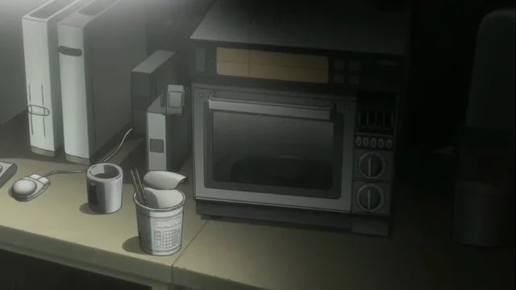

Частичная пушка
Это пульт от телевизора, помещенный в корпус игрушечного пистолета. Вдохновением для создания послужило аниме
«Мобильный воин Ганбам» (Mobile Brave Gunbam).
Пушкой можно только переключать каналы, включение/выключение и регулировка звука не работают. Вещь, объединяющая телевизионный пульт и игрушечный лазерный пистолет. Направив пистолет на телевизор и нажав курок, можно сменить канал, словно стреляя из пистолета. А теперь вспомни детство!
*Действует только кнопка следующий канал. Для других действий (питание, громкость и т.д.) Вам нужно нажать кнопку на самом телевизоре.

Камера-бамбукоптер
Это бамбукоптер (игрушечный вертолет) с прикрепленной к нему камерой, сделанный по мотивам аниме «22-эмон» (22-emon).
Камера встроена в пропеллер. В этом устройстве соединены традиционное японское ремесло и современные технологии,
так что граница между прошлым и будущим стирается. Не требует источника энергии.
Создатели гаджета осведомлены, что картинка смазывается из-за высокой скорости вращения камеры,
и не принимают жалоб по поводу этого ПЗС-камера на вращающейся летающей игрушке. Когда объединяются новейшее аудио-визуальное оборудование и традиционные японские изделия, грань между прошлым и будущим исчезает, и воплощается грандиозная функция - воздушная съёмка без приложения усилий.
*Записанное видео сильно вращается, но это не неисправность или что-то такое. В связи с этим, пожалуйста, никаких претензий.

Будет ли «ОРА ОРА!?!?
Это детектор лжи, идею которого подсмотрели в манге «Нежнейшие приключения Жужу» (Juju's Delicate Adventure).
Определяет, говорит ли подопытный правду, на основании пота с его пальца. Распознает ложь и скрытность.
Но корректная работа с потными от природы людьми не гарантирована. Детектор лжи, основанный на потении большого пальца.
Это лучший в мире шедевр, создание которого стало возможным благодаря всеобщим усилием всей лаборатории. С его помощью вы можете распознать всю ложь и раскрыть любые заговоры.
*Это устройство лишь определяет уровень пота. Может ли оно на самом деле определять ложь гарантировать не могу.

Змея-мод
Супер-мгновенный увлажнитель. Также работает как дымовая бомба. Один из немногих гаджетов будущего, которые можно успешно применять.
В гаджете есть электрокатушки, которые подогревают большое количество воды, она начинает кипеть и превращаться пар.
Идеальна в сухой сезон. Выглядит как мина «Клеймор». Создателей гаджета вдохновила игра «Metal Moad Solid; Rising».
Ультрамгновенный увлажнитель. С помощью электричества кипятится большое, огромное количество воды, а затем оно выпускается в виде громадного количества пара.
Больше не нужно бояться сухого сезона. Из-за её сходства с миной клеймор её также можно использовать для украшения дома.
*Применять на площади в 10 квадратных метров. Этот Гаджет Будущего одноразовый и уже был использован.

Опять я соединил что-то бесполезное, от Гоэмона
Фен, который использует тепло от пылесоса. Основан на аниме «Люпан 3» (Lupants the 3rd).
Экологичный. Сушит горячим воздухом. Регулировать поток воздуха нельзя. С этим феном не нужно платить за электричество.
Соединив его с пылесосом, мы смогли использовать выхлопное отверстие в качестве фена. Безумно, но экономично.
Противоречие лежит в основе взрывного рождения этого многострадального изобретения.
*Этот фен может использовать только горячий воздух, и ты не можешь регулировать горячий поток воздуха.

Сайлюмный меч
Это светящаяся палка, похожая на световой меч. Бутафорская кровь включена.
Гаджет рекомендуется использовать в ограниченном пространстве, так как кровь может забрызгать все вокруг.
Сделана по мотивам фильма «Искрящиеся войны» (Spark Wars). Заполнен дифенил оксалатом красного цвета.
Установив рукоять, его также можно держать как меч. Революционная идея с кровавой жидкостью позволяет добавить в импровизационный поединок реализма.
*Пожалуйста, не размахивайте им в узком пространстве. Присутствует возможность того,
что кровавая жидкость выплеснется и доставит неприятности окружающим.

Шар-активная оболочка оптического камуфляжа
Машина для камуфляжа, в которой используются CCD-камеры и 12 CRT-TV.
Требует много места. Создает слепое пятно, при этом пространство за шаром все равно остается видимым.
Создателей вдохновила манга «Призрак в отрядах» (Ghost in the Squad). Большая штуковина, с которой вы можете опробовать искусственный оптический камуфляж.
Оно сделано из шестидюймовых катодно-лучевых трубок в количестве 12 штук, а пространство между ними заполнено множеством КМОП-камер.
Камера торчит из шара перпендикулярно монитору сферы, связанному с задней частью этой камеры.
В результате слепое пятно пропадает из этой штуки, и у вас есть полный обзор другой стороны, даже если вы прячетесь в тени этого объекта.
*Он просто огромный. Пожалуйста, заказывайте лишь при условии, что у Вас дома достаточно места.
Пожалуйста, не катайте его, иначе сломается.

Телеволновка (название временное)
Микроволновка, которой можно управлять удаленно с помощью мобильного телефона.
К тому времени, как вы доберетесь домой, еда будет уже готова.
Также может создавать черные дыры Керра и перемещать данные и объекты назад во времени.
Однако то, что данными не является, при проходе через микроволновку превращается в гель.
Однако маленькие объекты отправлять в прошлое можно.
С помощью микроволновки Окабе мог отправлять свои ди-мейлы, сообщения, в прошлое, однако у них был лимит на количество символов.
Позже Курису усовершенствовала устройство, что позволило отправлять в прошлое воспоминания.
После этого гаджет был переименован в машину прыжков во времени. Несколько раз использовался Ринтаро для спасения Маюри от смерти.
После завершения миссии, гаджет разобрали и выкинули. Благодаря объединению с мобильным телефоном микроволновка обзавелась
функцией дистанционного управления. К моменту Вашего возвращения домой, всё уже разогреется!
*В данный момент проходит её настройка. Пока не готова к продаже
